Karachi is the capital city of the Pakistani province of Sindh. It is the largest city in Pakistan and 12th largest in the world, with a population of over 20 million. It is situated at the southern tip of the country along the Arabian Sea coast and formerly served as the country's capital from 1947 to 1959.
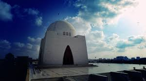 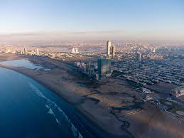 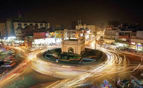 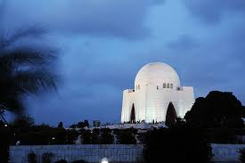Lahore is the capital and largest city of the Pakistani province of Punjab. It is the second largest city in Pakistan, after Karachi, and 26th largest in the world, with a population of over 13 million. Located in central-eastern Punjab, along the River Ravi, it is the largest Punjabi-speaking city in the world.
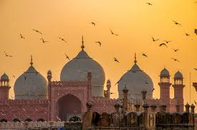 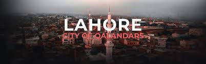
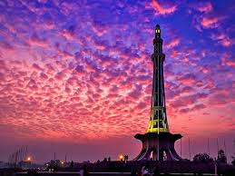
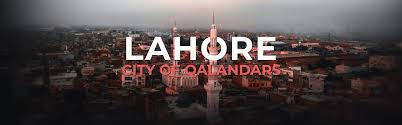
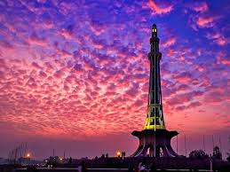
Islamabad is the capital city of Pakistan. It is the country's tenth-most populous city with a population of 1,108,872 people and is federally administered by the Pakistani government as part of the Islamabad Capital Territory.
 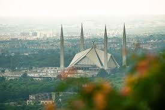
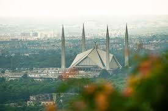